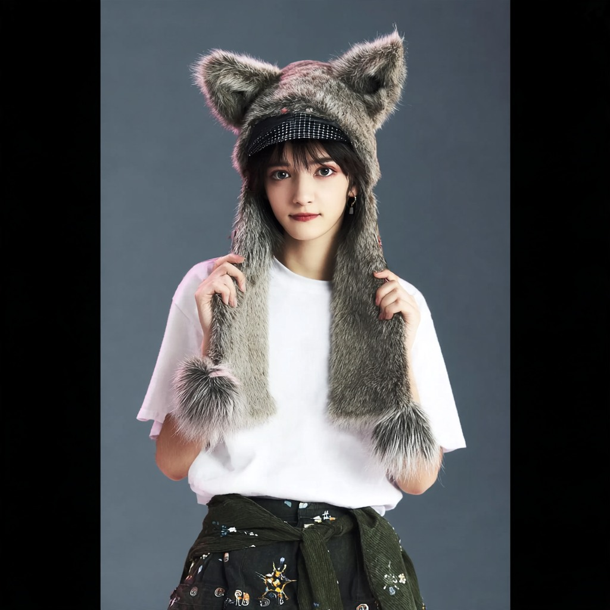
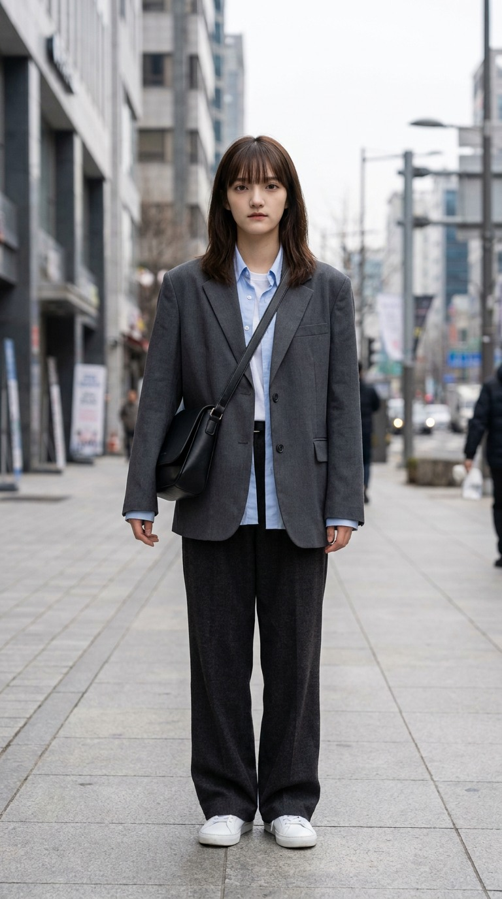
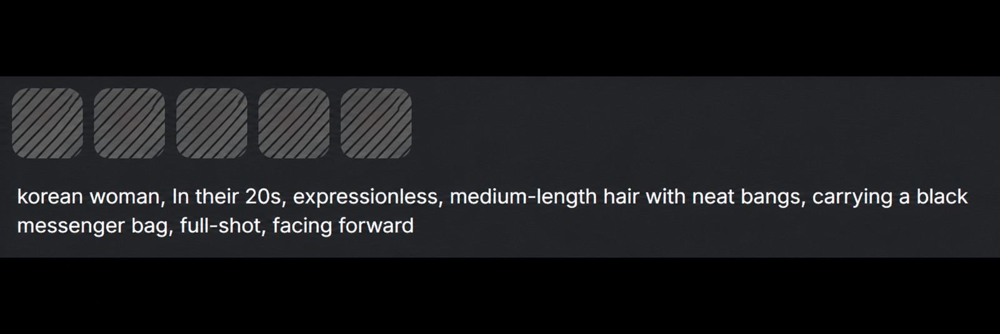
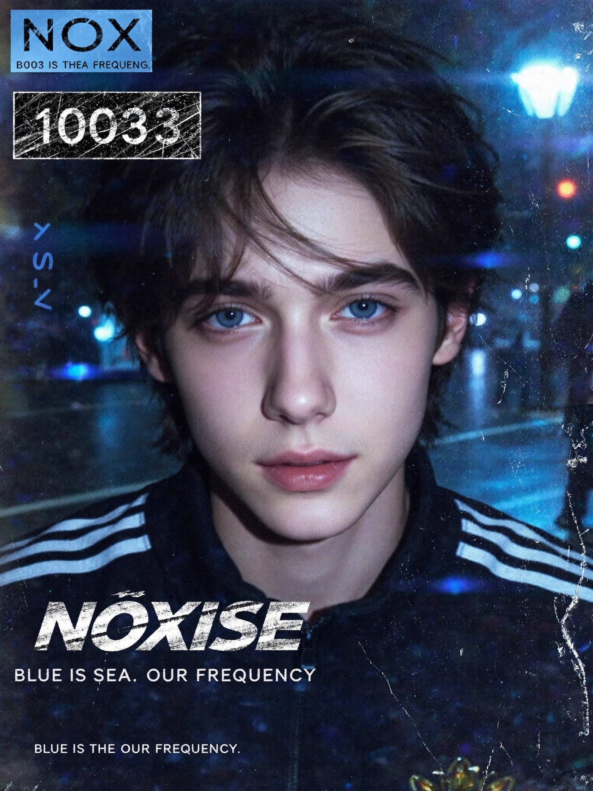
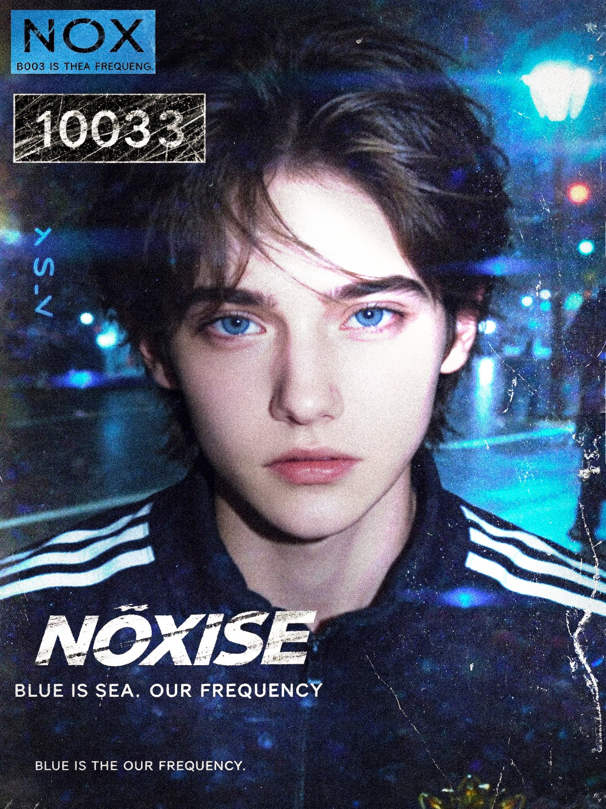
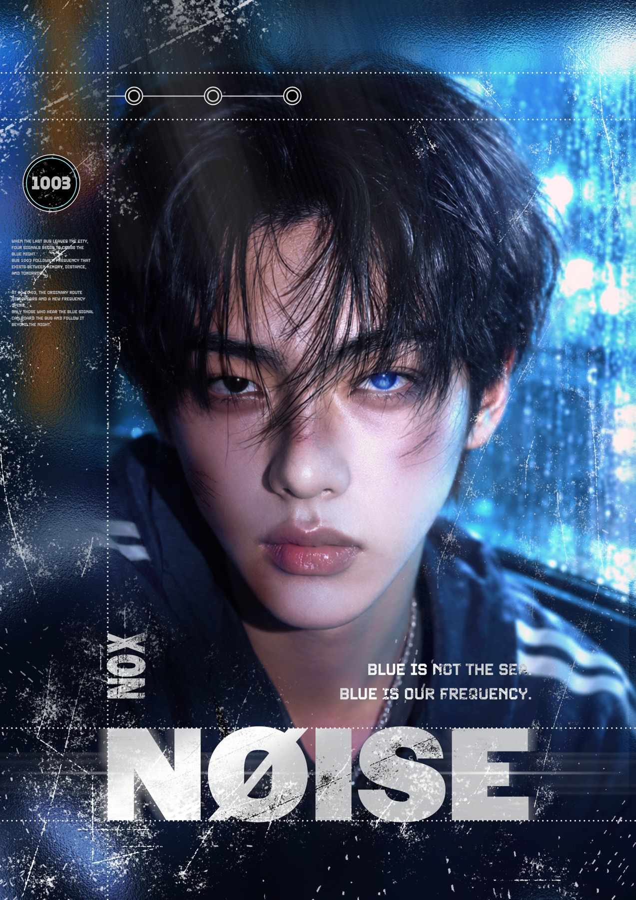
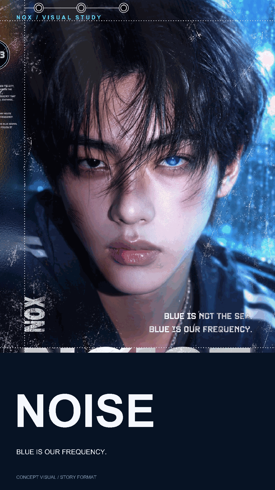
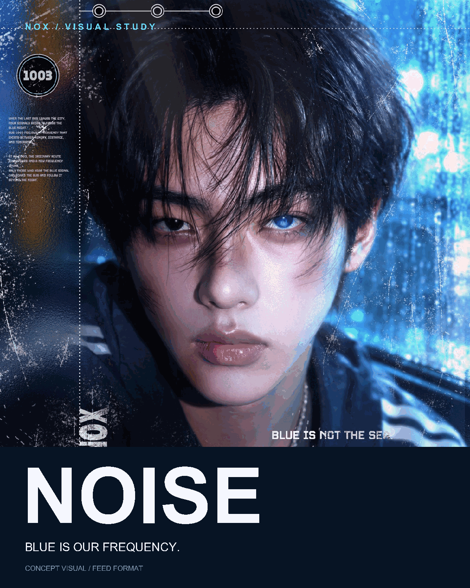
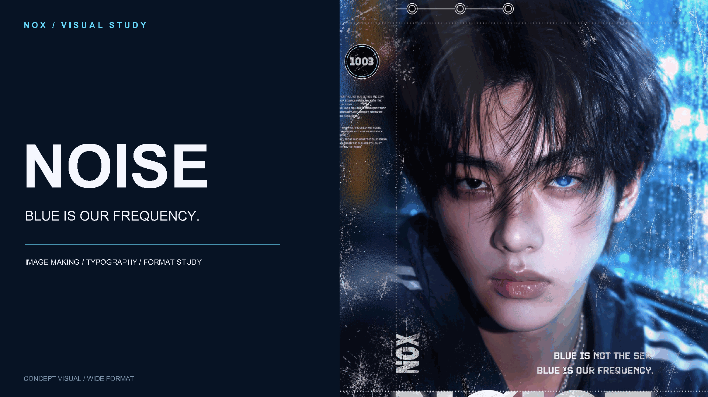
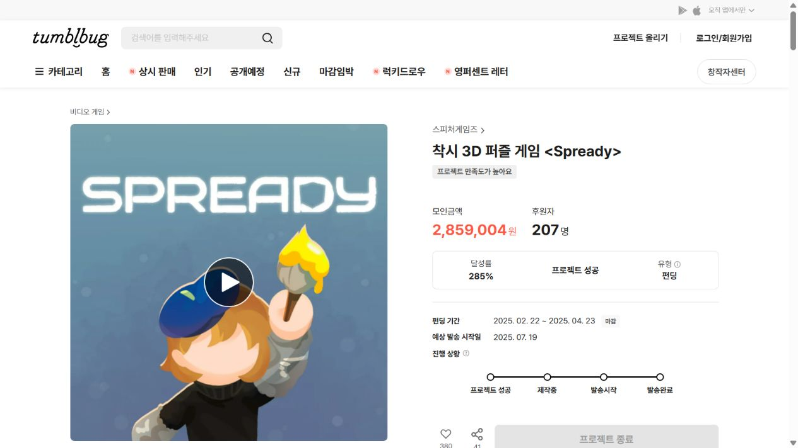

SELECTED WORK / 2026
완성작과 그 사이의 판단.
AI 영상, 이미지 후보정, 팀 프로젝트의 제작 근거를 소개합니다.
01 / AI SHORT FILM
한술 — 사회초년생에게 건네는 한 끼
29초라는 짧은 시간에 평범한 직장인의 하루와 위로를 담기 위해, 인물의 외형부터 의상·표정·장면을 기획에 맞춰 구체화했습니다.

인물 외형을 정한 실제 생성 이미지.

사회초년생 설정에 맞춰 재킷·가방·전신 구성을 구체화.
인물 이미지를 장면으로 확장한 최종 영상.
예쁜 인물 이미지보다 ‘평범한 직장인’으로 읽히는 의상과 소품이 이야기의 출발점이 되도록 구성했습니다.
기존 영상 상세도 보기 ↗
실제 프롬프트 텍스트
korean woman, In their 20s, expressionless, medium-length hair with neat bangs, carrying a black messenger bag, full-shot, facing forward
02 / IMAGE MAKING & RETOUCH
NOX — 생성한 이미지에서 포스터까지
푸른 조명과 인물 클로즈업을 중심으로 비주얼을 만들고, Photoshop 사진 보정과 타이포그래피 배치로 포스터를 완성했습니다.


생성 원본과 비교해 인물의 인상과 비례를 조정한 작업.
위 비교는 사진 후보정 과정입니다. 생성 이미지에 포함된 문자는 아래 추가 시안에서 별도로 정돈했습니다.

위 전후 비교의 다음 단계가 아닌 별개의 작업입니다.
인물과 타이포그래피를 함께 구성
배경의 푸른 조명과 인물의 시선을 중심에 두고, 타이틀과 프레임으로 화면의 흐름을 구성했습니다.
매체에 따라 읽는 순서를 바꾸기
아래 3개 시안은 이번 포트폴리오 보완에서 추가한 매체별 레이아웃입니다. 기존 포스터를 단순히 잘라내지 않고 이미지 영역·제목 크기·본문 위치를 각각 조정했습니다.
개인 비주얼 콘셉트의 매체 전개 시안이며 실제 브랜드 집행물이나 광고 성과를 의미하지 않습니다.
추가 제작 / 3가지 매체 비율


인물 상단 · 제목 하단 집중


이미지와 제목을 짧은 시선으로 연결


이미지 우측 · 메시지 좌측 분리
03 / TEAM PROJECT
Spready — 게임의 매력을 시각 자료로
게임 아트와 홍보영상 제작 경험을 바탕으로, 다른 아트 팀원과 굿즈를 공동 기획·제작하고 펀딩 페이지 레이아웃 담당 팀원을 위한 시각 리소스 제작을 지원했습니다.

출처: 텀블벅 Spready 프로젝트 · 2026.10.28 확인. 위 수치는 팀 프로젝트 전체의 성과입니다.
기획 의도를 이해하고, 제작으로 기여하겠습니다.
기획 의도에 맞춰 이미지 보정·합성, 시안 제작과 짧은 영상 편집으로 이야기를 전달하겠습니다.